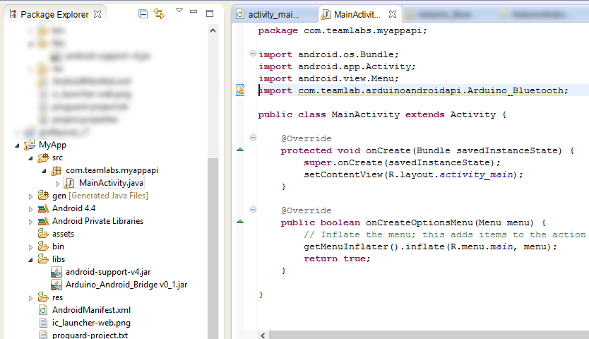

Iniciando com o Android-Arduino Bridge
Desenvolva aplicações Android que se conectam a dispositivos baseados em Arduino
Desenvolva aplicações Android que se conectam a dispositivos baseados em Arduino
Para o desenvolvimento do aplicativo será necessário o uso de uma IDE Java, configurada para desenvolvimento Android. Recomendamos o uso do ADT Bundle, esta é uma versão do Eclipse já configurada para o desenvolvimento android.
Se você já possui algum projeto e queira apenas adicionar a API, pule para o passo 3.
Com o Eclipse aberto, crie um novo projeto para android: File > New > Android Application Project
a seguinte janela deve aperecer, configure seu projeto como preferir.
Faça o download do Arduino Android Bridge, dê preferência às versões mais recentes.
Extraia o arquivo "Android_Arduino_Bridge.zip" e copie o arquivo "Arduino_Android_Bridge.jar" contido nesse.
Voltando ao Eclipse, cole o .jar na pasta /libs do seu projeto, como na imagem abaixo:

O AndroidManifest.xml é um arquivo presente na raiz do seu projeto, nele constam as informações essenciais sobre o seu aplicativo, que serão lidas pelo sistema Android.
Para que possamos acessar o adaptador Bluetooth do aparelho é necessário que o aplicativo tenha permissão para isso. Para adicionar essa permissão, basta copiar o trecho abaixo para o AndroidManifest.xml do seu aplicativo:
<uses-permission android:name="android.permission.BLUETOOTH_ADMIN"/>
<uses-permission android:name="android.permission.BLUETOOTH"/>
Você pode editar o .xml diretamente, como mostrado abaixo:

Insira, no início da sua activity (ou qualquer outro .java que for utilizar a API), o seguinte trecho:
import com.teamlab.arduinoandroidapi.Arduino_Bluetooth;
Inicialmente crie uma variável global do tipo Arduino_Bluetooth
Arduino_Bluetooth arduino;
No método onCreate() da sua Activity inicie sua variável, esse passo é importante para verificar se o aparelho android possui adaptador bluetooth:
arduino = new ArduinoBluetooth();
A API ainda não possui métodos internos de pareamento com dispositivos, portanto é necessário que o usuário efetue o pareamento manualmente.
No momento que desejar iniciar uma conexão, seja quando o usuário pressionar um botão ou ao início de uma atividade, basta apenas a seguinte linha:
arduino.Begin("nome do módulo Bluetooth");
Por exemplo, utilizando o módulo JY-MCU, que possui nome padrão "linvor", a conexão iniciaria desta forma:
arduino.Begin("linvor");
Se o nome do dispositivo não for constante, a API disponibiliza métodos de listagem de dispositivos pareados, de forma que o usuário possa escolher com qual dispositivo deseja se conectar.
Tentamos manter os métodos de recebimento e envios de dados próximos ao de uma comucação serial, realizada pelo arduino. Dessa forma, para ler os dados recebidos e enviar os dados basta seguir os comandos a baixo:
Recebimento:
String leitura = arduino.Read();
Ou, se deseja-se leitura contínuas, (utilizando Threads ou Runnables) em que a leitura deve atualizada apenas quando novos dados forem recebidos:
if(arduino.Available()>0){
leitura= arduino.Read();
}
Envio:
arduino.Write("Hello World");
Com o conteúdo até o item 8 já é possível desenvolver aplicações para conexão com arduino, porém é extremamente recomendável que, sempre que possível, teste a conexão com o dispositivo.
Na versão atual da API (0.2) existem os seguintes estados de conexão:
ConnectionState.IMPOSSIBLE_CONNECTION-> Quando o aparelho não possui adaptador bluetooth;
ConnectionState.WAITING_DEVICE-> O aparalho possui bluetooth e o objeto Arduino_Bluetooth já foi construído;
ConnectionState.WAITING_DATA->Uma conexão já foi estabelecida, porém ainda não recebeu-se dados;
ConnectionState.RECEIVING_DATA->Está havendo troca de dados, neste momento é seguro realizar a leitura/envio de dados;
ConnectionState.ABORTED-> Se ocorrer algum erro interno da API ou de conexão.
Ao fim da sua activity é necessário o encerramento do socket bluetooth, ou seja, no método onDestroy() da sua activity insira:
arduino.CloseConnetion();
Para mais informações sobre o funcionamento da API acesse:
Download do projeto (eclipse): (em breve)